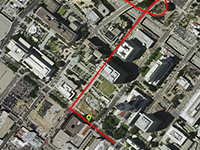

Simulation of movement marker on the route

Example of simulation movement marker on the route.
Usage instructions:
Add this script to map GameObject and start the scene.
Search a route from Los Angeles to Hollywood, and simulates the movement on the route with the specified speed.
Add this script to map GameObject and start the scene.
Search a route from Los Angeles to Hollywood, and simulates the movement on the route with the specified speed.
MoveMarkerOnRouteExample.cs
/* INFINITY CODE 2013-2019 */
/* http://www.infinity-code.com */
using System;
using System.Collections.Generic;
using System.Linq;
using UnityEngine;
namespace InfinityCode.OnlineMapsExamples
{
/// <summary>
/// Example of simulation movement marker on the route.
/// </summary>
[AddComponentMenu("Infinity Code/Online Maps/Examples (API Usage)/MoveMarkerOnRouteExample")]
public class MoveMarkerOnRouteExample : MonoBehaviour
{
public string googleAPIKey;
/// <summary>
/// Start location name
/// </summary>
public string fromPlace = "Los Angeles";
/// <summary>
/// End location name
/// </summary>
public string toPlace = "Hollywood";
/// <summary>
/// Speed of movement (km/h).
/// </summary>
public float speed = 60;
/// <summary>
/// Move map to marker position
/// </summary>
public bool lookToMarker = false;
/// <summary>
/// Orient marker on next point.
/// </summary>
public bool orientMarkerOnNextPoint = false;
/// <summary>
/// Reference to marker
/// </summary>
private OnlineMapsMarker marker;
/// <summary>
/// Array of route points
/// </summary>
private OnlineMapsVector2d[] points;
/// <summary>
/// Current point index
/// </summary>
private int pointIndex = -1;
/// <summary>
/// Current step progress
/// </summary>
private double progress;
private void Start()
{
if (string.IsNullOrEmpty(googleAPIKey)) Debug.LogWarning("Please specify Google API Key");
// Looking for a route between locations.
OnlineMapsGoogleDirections request = new OnlineMapsGoogleDirections(googleAPIKey, fromPlace, toPlace);
request.OnComplete += OnComplete;
request.Send();
}
private void OnComplete(string response)
{
Debug.Log("OnComplete");
OnlineMapsGoogleDirectionsResult result = OnlineMapsGoogleDirections.GetResult(response);
if (result == null || result.routes.Length == 0)
{
Debug.Log("Something wrong");
Debug.Log(response);
return;
}
OnlineMapsGoogleDirectionsResult.Route firstRoute = result.routes[0];
List<OnlineMapsGoogleDirectionsResult.Step> steps = firstRoute.legs.SelectMany(l => l.steps).ToList();
// Create a new marker in first point.
marker = OnlineMapsMarkerManager.CreateItem(steps[0].start_location, "Car");
// Gets points of route.
points = firstRoute.overview_polylineD;
// Draw the route.
OnlineMapsDrawingLine route = new OnlineMapsDrawingLine(points, Color.red, 3);
OnlineMapsDrawingElementManager.AddItem(route);
pointIndex = 0;
}
private void Update()
{
if (pointIndex == -1) return;
// Start point
OnlineMapsVector2d p1 = points[pointIndex];
// End point
OnlineMapsVector2d p2 = points[pointIndex + 1];
// Total step distance
double dx, dy;
OnlineMapsUtils.DistanceBetweenPoints(p1.x, p1.y, p2.x, p2.y, out dx, out dy);
double stepDistance = Math.Sqrt(dx * dx + dy * dy);
// Total step time
double totalTime = stepDistance / speed * 3600;
// Current step progress
progress += Time.deltaTime / totalTime;
OnlineMapsVector2d position;
if (progress < 1)
{
position = OnlineMapsVector2d.Lerp(p1, p2, progress);
marker.SetPosition(position.x, position.y);
// Orient marker
if (orientMarkerOnNextPoint) marker.rotation = 1.25f - OnlineMapsUtils.Angle2D((Vector2)p1, (Vector2)p2) / 360f;
}
else
{
position = p2;
marker.SetPosition(position.x, position.y);
pointIndex++;
progress = 0;
if (pointIndex >= points.Length - 1)
{
Debug.Log("Finish");
pointIndex = -1;
}
else
{
// Orient marker
if (orientMarkerOnNextPoint) marker.rotation = 1.25f - OnlineMapsUtils.Angle2D(p2, points[pointIndex + 1]) / 360;
}
}
if (lookToMarker) OnlineMaps.instance.SetPosition(position.x, position.y);
OnlineMaps.instance.Redraw();
}
}
}